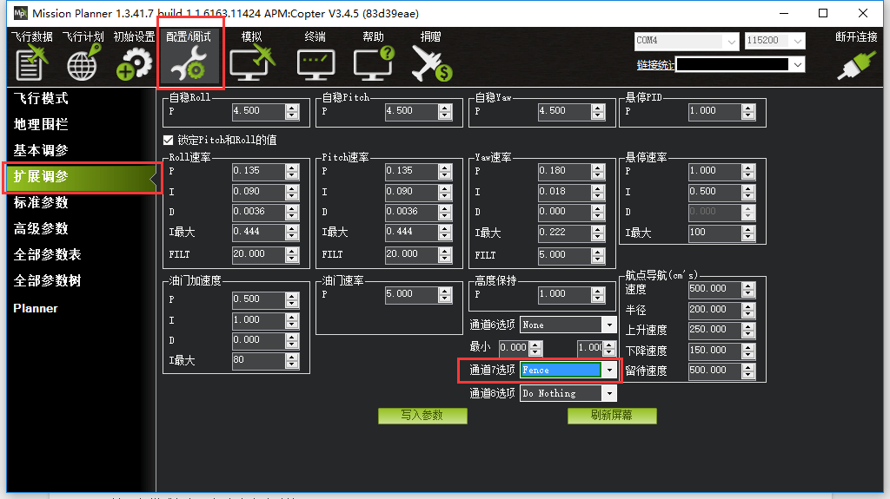

简单的电子围栏
在APM:COPTER 3.0以上的版本，新加入了一个 简单的电子围栏保护系统，以HOME点为中心的简单“锡罐”形状电子围栏，可以防止你的飞行器超过设定半径和高度，从而触发对应保护模式，比如RTL回家，或者LAND降落。可以通过地面站去设置。
类型：
Cricle：半径范围限制
Altitude：高度限制
Altitude OR Cricle :高度和距离限制
动作：
Report only:
当飞行器超过了设定的电子围栏边界范围，在地面站会提示超过围栏范围
适合使用手机APP软件的玩家
RTL OR LAND:
当飞行器超过了设定的电子围栏边界范围，飞行器将执行RTL或者LAND操作
If the vehicle strays outside these borders it will switch into RTL or LAND. At the moment the fence is breached a backup fence is erected 20m further out (or up). If the copter breaches this backup fence (for example if the the vehicle is not set up correctly or the operator takes control but is unable to bring the copter back towards home) the copter will be switched into RTL again (and another backup fence an additional 20m further out will be created).
可以通过以下方式设置 简单电子围栏：
- 将PIX飞控使用USB或者数传连接到Mission Planner
- 配置/调试>>>地理围栏
- 勾上启用 框
- 类型设置你想要的限制类型：Cricle半径限制或者Altitude 高度限制
- 动作：超过限制执行的操作
- max alt 最高高度限制：设置最大高度
- 最大半径：最大的半径距离
- 返航最低高度：根据飞行环境设置一个理想的返航高度
通过通道7或者通道8开启电子围栏功能：
如果你想通过通道开关来开启和关闭电子围栏，可以这样操作：（新手不建议，容易混乱出错）
- 提前已经设置好并校准好了一个CH7或者CH8通道开关，在你的遥控器上面
- 转到Mission Planner>>配置/调试>>扩展调参
- 设置一个CH7或者CH8，选中Fence功能 （i.e. PWM值大于1800为开启，低于1800为关闭）
- 
警告：
- 最小建议围栏半径为30米
- 围栏要求GPS运行良好，因此在启用围栏时不要禁用GPS布防检查， 也不要使EKF失效保护，相反，如果禁用这些检查，请禁用 电子围栏。
- 为了获得最佳效果，请确认RTL是能正常使用的。
- 启用电子围栏，解锁之前，飞控板将检查GPS是否锁定，否则无法解锁，并报错。
- 如果未启用GPS故障保护，并且启用了电子围栏，并且在飞行时GPS信号丢失或者GPS故障，则将自动禁用电子围栏。
- 如果启用GPS故障安全并且启用Fence并且飞行时您失去GPS锁定，则飞行器将切换到LAND 无论飞行模式如何，都会发生这种情况。 如果不需要LAND序列，则导频可以通过移动飞行模式开关重新进行控制。
- 备份栅栏创建20米从上一个破裂的栅栏不是20米外的车辆的位置。 这意味着如果您选择覆盖围栏，您可能有不到20米重新获得车辆控制，在护栏再次将飞行器切换到RTL（或LAND）之前。 如果你想覆盖围栏，你应该准备好两次切换飞行模式，或者设置启用/禁用围栏开关。